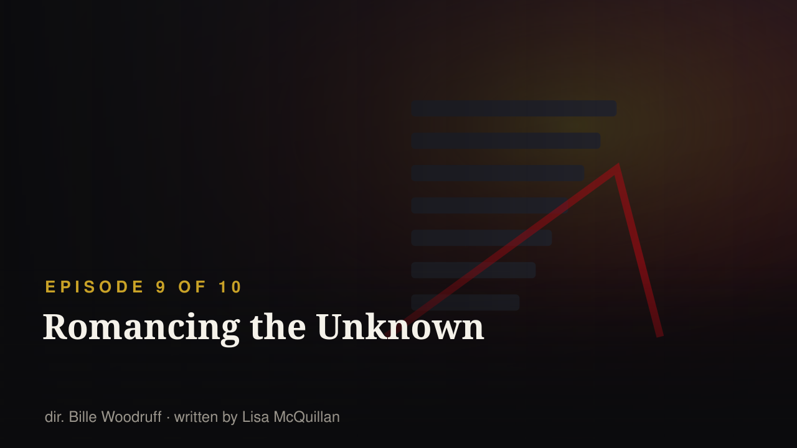
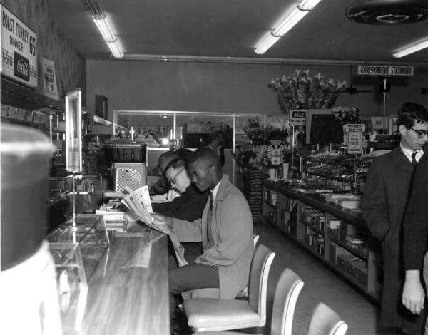
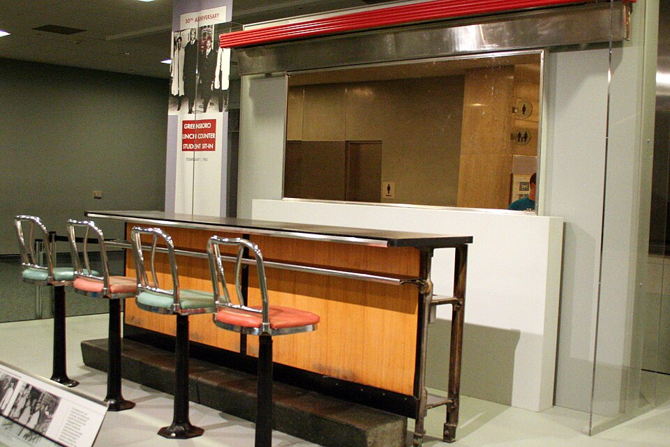
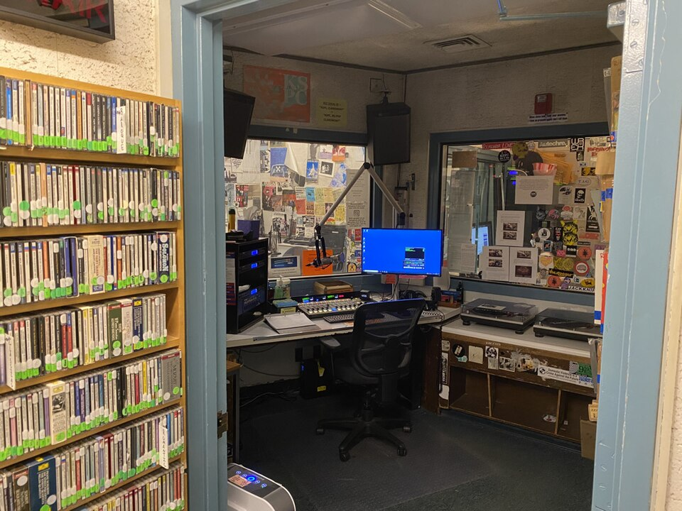
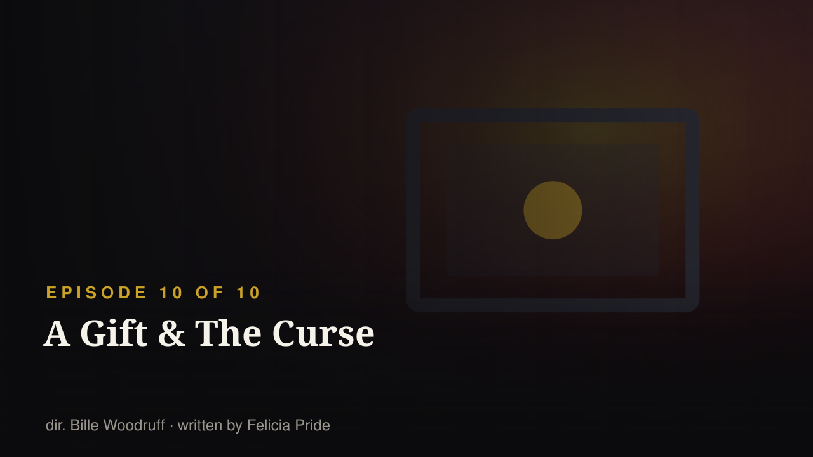

EPISODE 9 OF 10 · RELEASED 2026-09-24
The situation at Hillman becomes much more serious when the college's budget crisis erupts. Deborah and her friends decide they aren't simply going to sit back and watch what happens and begin taking action themselves. At the same time, the long-running problems between Dwayne and Whitley come to a head, putting Deborah in the middle of a major family conflict while she's also becoming involved in the crisis at the college.
S1·E9 — “Romancing Mr. Stone” · first aired 1987-12-10
The professor-crush episode: the women of Gilbert Hall invent a person out of a lecturer and Denise gets caught doing the same thing she mocked.
The original's ninth episode was about the gap between the person and the projection. The revival's ninth — where the college itself becomes the uncertain object, and the students decide to fight for it — keeps the word 'romancing' and moves it from a man to an institution. That's a good joke about student debt.
Sources: Wikipedia — A Different World (2026 TV series) · Wikipedia — List of A Different World episodes · search terms: Romancing unknown
S1·E2 — “Pilot” · first aired 1987-10-01
Money runs underneath the original from episode two: Denise discovers her dorm-fee cheque has bounced, and the students are constantly working (the Pit, jobs, scholarships) to stay enrolled.
The original's Hillman was never financially safe; it was one bounced cheque from the start. That is why the revival's budget crisis is continuity rather than a new stunt — and why the fight over a college's survival is the most 1987 thing in the 2026 season.
Sources: Wikipedia — A Different World (2026 TV series) · Wikipedia — List of A Different World episodes · search terms: budget money closing funding crisis
S2·E32 — “Radio Free Hillman” · first aired 1989-01-05
Students hold a sit-in at the administration building to protest the censorship of student media. The dean does not punish the protesters.
Student organising is the original's established method for dealing with institutional power, and the show was careful to make it costly and specific rather than heroic. Watch whether 2026 lets the administration be reasonable — the 1989 episode did, and it's a braver choice.
Sources: Wikipedia — A Different World (2026 TV series) · Wikipedia — List of A Different World episodes · search terms: organize protest sit-in administration action
S6·E120 — “Honeymoon in L.A. (part 1)” · first aired 1992-09-24
The original opened its final season with the Rodney King police-brutality trial: a discussion of the verdict sends Dwayne and Whitley back to their honeymoon in Los Angeles during the riots that followed it, with the story continuing into the next episode as the city burns and the two are separated. Guest cast included Sister Souljah.
A Black sitcom in 1992 put a police-brutality trial and the LA uprising at the centre of its season premiere, in a family-comedy slot, and trusted its audience with it. Whatever the revival says about policing, funding and protest in 2026 gets read against that floor. This is the show's political inheritance in one episode.
Sources: Wikipedia — List of A Different World episodes · Wikipedia — A Different World (1987 series) · search terms: Rodney King riots police verdict
S5·E95 — “We've Only Just Begun” · first aired 1991-09-19
Jada Pinkett first appears as Lena in the season-five opener (a note in the episode list marks it as her first appearance); she becomes a regular cast member when season six opens with "Honeymoon in L.A." — an episode where a conversation about the Rodney King police-brutality trial leads Dwayne and Whitley to recount their honeymoon during the Los Angeles riots, and whose guest cast includes Sister Souljah.
This is the answer to the question the original never got to ask: what happens to the student who is political at nineteen? Lena went to Congress. And she comes from the cohort the original introduced while putting the Rodney King verdict and the LA riots into a sitcom — which is the lineage the revival's campus activism is standing in.
Sources: Wikipedia — A Different World (2026 TV series) · Wikipedia — List of A Different World episodes · search terms: congresswoman Lena James
S4·E94 — “To Be Continued” · first aired 1991-05-02
The original repeatedly had Dwayne and Whitley evaluate the relationship itself — a summer apart, different cities, different ambitions — and made them state the terms out loud.
The original's gift was making the relationship an ongoing negotiation about futures rather than a will-they-won't-they. The revival puts their daughter inside that negotiation, which is the most honest place for a child of a famous couple to stand.
Sources: Wikipedia — A Different World (2026 TV series) · Wikipedia — List of A Different World episodes · search terms: Dwayne Whitley marriage divorce separation
The college runs out of money, the students organise, and a family conflict runs underneath the institutional one.
The original said it first — S6·E120 “Honeymoon in L.A. (part 1)” (1992-09-24)The original's final-season premiere put the Rodney King police-brutality trial at the centre of a sitcom: a discussion of the verdict sends Dwayne and Whitley back to their honeymoon in Los Angeles during the riots that followed it, with the story continuing as the city burns and the couple is separated. Guest cast included Sister Souljah.
What is happening nowTwo things make this episode the political centre of the season. First, the budget: the original's Hillman was one bounced cheque from disaster in its second episode, so a 2026 cash crisis is continuity, not a plot device. Second, the precedent — this show put the LA uprising in a family sitcom and trusted its audience. A revival whose season turns on students fighting for their college is standing exactly where its parent show stood in 1992.
Collapsed by default, at the bottom. Kept local — never published wholesale.
subtitles/ and running python3 scripts/import_subtitles.py. Accepted: .srt, .vtt, Netflix .ttml/.dfxp, or a .json export from the Netflix Subtitle Translator userscript cache.



The season closes on the question the original spent six years on: what is a college worth if the institution itself is the thing that's struggling?

Deborah Wayne starts her freshman year at her parents' college — 39 years to the day after her parents' show premiered.

Deborah speaks her mind in public and gets called out for it. In 1989 the same fight happened over a campus radio show.

Homecoming brings the alumni back — and the original cast back to campus, with Dwayne and Whitley's marriage visibly cracking.

The title is a one-word edit of a 1987 episode. The dating rules underneath it changed completely.

Finals panic, then a crisis that reframes everything — the slot the original show reserved for the episode that mattered most.

"The aunties" walk into the club — five of them played the same roles forty years ago.
.jpg){kind=link}